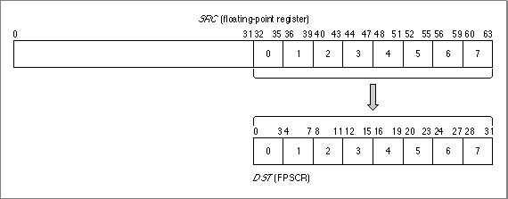

Saving and Restoring the Floating-Point Environment
To save and restore the state of the entire floating-point environment, use themffsandmtfsfinstructions.The
mffsinstruction saves the FPSCR to a floating-point register. It has the formmffs DSTwhere DST is the floating-point register into which the FPSCR should be copied. For example, the instructionmffs f0saves the current state of the FPSCR register in bits 32 through 63 of floating-point register F0. Bits 0 through 31 of register F0 are set to 1's.To restore a floating-point environment that you have previously saved, use the
mtfsfinstruction. This instruction copies a 4-bit field from a floating-point register into an FPSCR field. It has the formmtfsf DST, SRCwhere DST is a 4-bit FPSCR field and SRC is the floating-point register from which the field should be copied. The instruction assumes that the last half of the floating-point register SRC contains an FPSCR value. Thus, if you specifymtfsf 3,f0bits 44 through 47 of register F0 are copied into FPSCR field 3, bits 12 through 15.
Figure 12-3 shows how the FPSCR fields map to a floating-point register.Figure 12-3 SRC and DST fields for
mtfsfinstruction
Listing 12-3 saves the floating-point environment and then restores it.
Listing 12-3 Saving and restoring the floating-point environment
mffs f10 # FPSCR copied into register f10 # other floating-point computations occur here mtfsf 0,f10 # restore bits 0 and 3 mtfsf 1,f10 # restore bits 4 through 7 mtfsf 2,f10 # restore bits 8 through 11 mtfsf 3,f10 # restore bits 12 through 15 mtfsf 4,f10 # restore bits 16 through 19 mtfsf 5,f10 # restore bits 20 through 23 mtfsf 6,f10 # restore bits 24 through 27 mtfsf 7,f10 # restore bits 28 through 31 # entire FPSCR now restored